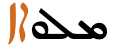

This page gathers basic information about the Syriac script and its use for the Turoyo (Surayt) language. It aims (generally) to provide an overview of the orthography and typographic features, and (specifically) to advise how to write Turoyo using Unicode.
Phonetic transcriptions on this page should be treated as an approximate guide, only. Many are more phonemic than phonetic, and there may be variations depending on the source of the transcription.
Turoyo, also referred to as Surayt, is a Central Neo-Aramaic language traditionally spoken in southeastern Turkey and northern Syria by Assyrians. Most speakers use the Classical Syriac language for literature and worship. Turoyo speakers are currently mostly members of the Syriac Orthodox Church, but there are also Turoyo-speaking members of the Chaldean Catholic Church, especially from the town of Midyat, and of the Assyrian Church of the East. It is also currently spoken in the Syriac Diaspora, although classified as a vulnerable language. Turoyo is not mutually intelligible with Western Neo-Aramaic having been separated for over a thousand years, while mutual intelligibility with Assyrian Neo-Aramaic and Chaldean Neo-Aramaic is limited.
Apart from Classical Syriac Aramaic, the alphabet has been used to write other dialects and languages. Several Christian Neo-Aramaic languages from Turoyo to the Northeastern Neo-Aramaic dialects of Assyrian and Chaldean, once vernaculars, primarily began to be written in the 19th century. The Serṭā variant specifically has recently been adapted to write Western Neo-Aramaic, traditionally written in a square Aramaic script closely related to the Hebrew alphabet. Besides Aramaic, when Arabic began to be the dominant spoken language in the Fertile Crescent after the Islamic conquest, texts were often written in Arabic using the Syriac script as knowledge of the Arabic alphabet was not yet widespread; such writings are usually called Karshuni or Garshuni (ܓܪܫܘܢܝ). In addition to Semitic languages, Sogdian was also written with Syriac script, as well as Malayalam, which form was called Suriyani Malayalam.
The orthography described here is as described by the ܫܠܳܡܐ ܣܘܪܰܝܬ Šlomo Surayt project. The site introduction includes the following.
Surayt is a Neo-Aramaic language originally spoken in Turabdin, a region in southeastern Turkey, traditionally inhabited by Syriac Christians. In academia, Surayt has also become known as “Turoyo”. However, the speakers themselves have not accepted this academic term. They usually call their language Surayt. This term goes back to Classical Syriac Suryå'īṯ and means “Syriac” or “the way Syrians speak”. Today in Europe, many speakers simply use the term Suryoyo for their language. In this course, we have chosen to use the term Surayt because its speakers in Turabdin traditionally used it. It can also be used alongside the term Turoyo, which has been more in use among Western scholars.
Surayt spoken in the diaspora is not the same as any of the local dialects in Turabdin. The language presented in Šlomo Surayt is a slightly unified version of Surayt, which developed in the diaspora, and which can be considered as unique for its new context. Today, only about 1,500 people in the area of origin in Turabdin speak Surayt. However, in the European diaspora more than 250,000 people call it their “mother tongue”. Surayt is not a dialect of Classical-Syriac (kṯobonoyo), which is still used as liturgical language in Syriac churches. Within the Neo-Aramaic languages, Surayt is classified as Eastern Neo-Aramaic, which also includes the Jewish and other Christian Neo-Aramaic dialects of Iraq and Iran.
Syriac, in principle, is an abjad. The script relies mostly on consonant sounds to write words, although the orthography described here for Turoyo requires the text to be fully pointed, making it more like an alphabet. See the table to the right for a brief overview of features for the modern Turoyo orthography.
(See the key. Character counts exclude ASCII characters.)
The Syriac script has three main orthographic systems: maḏnḥāyā (ܡܲܕ݂ܢܚܵܝܵܐ) (eastern), ʾesṭrangēlā (ܐܣܛܪܢܓܠܐ), and serṭā (ܣܶܪܛܳܐ) (western). Turoyo uses a version of the serto orthography, derived from West Syriac texts.
For vowels, Turoyo uses a subset of the Greek letter diacritics in the serto orthography. The position relative to the base consonant (above or below) is not interchangeable, but signals different vowel sounds.
The Turoyo orthography described here uses only a small number of diacritics and punctuation marks, compared to Syriac. It treats combinations of consonant plus diacritic as distinct letters of the alphabet.
Character index
The index points to locations where a character is mentioned in this page, and indicates whether it is used by the modern Turoyo orthography described here.
See also a list of characters in the Syriac Unicode blocks not used for the Turoyo orthography, grouped by General Category.
Show the index
Letters
Consonants
ܒ␣ܓ␣ܔ␣ܕ␣ܗ␣ܘ␣ܙ␣ܚ␣ܛ␣ܝ␣ܟ␣ܠ␣ܡ␣ܢ␣ܣ␣ܥ␣ܦ␣ܨ␣ܩ␣ܪ␣ܫ␣ܬ
Vowels
ܐ
Combining marks
Vowels
ܷ␣ܱ␣ܶ␣ܳ␣ܰ
Other
̰␣݁␣݂␣݅␣݆
Punctuation
،␣؛␣؟␣܆␣܇␣.
Other
␣␣␣␣␣␣␣␣␣␣␣
Character lists show:
Phonology
These are sounds for the Turoyo language.
Click on the sounds to reveal locations in this document where they are mentioned.
Phones in a lighter colour are non-native or allophones. Source Wikipedia.
Vowel sounds
Plain vowels.
Diphthongs
Consonant sounds
labial
dental
alveolar
post-
alveolar
palatal
velar
uvular
pharyngeal
glottal
stop
pb
td tˤ
kɡ
q
ʔ
affricate
t͡ʃd͡ʒ
fricative
fv
θð
sz sˤ
ʃʒ
xɣ
ħʕ
h
nasal
m
n
approximant
w
l
j
trill/flap
r
Vowels
Consonants representing vowels (matres lectionis)
Three consonants represent vowels or the end of a diphthong if they have no vowel diacritic attached.
ܐ␣ܝ␣ܘ
ܘ [U+0718 SYRIAC LETTER WAW] represents u if preceded by a consonant without an immediately following vowel (either a diacritic or a mater lectionis), eg. ܩܘܝܡܐqwymʾqujamasubsistenceܚܰܠܘܐ If it doesn't have a vowel diacritic but the preceding consonant has, it represents part of the diphthong aw,a,§2.4?content-fragment-id=1750 eg. ܕܰܘܡܐ
ܝ [U+071D SYRIAC LETTER YUDH] works in the same way to produce i, eg. ܪܝܫܐܐܰܕܠܰܠܝܐ As part of a diphthong it represents j,a,§2.4?content-fragment-id=1750 eg. ܐܰܝܕܰܪܒܐ
ܐ [U+0710 SYRIAC LETTER ALAPH] behaves in a similar way to produce o, eg. ܒܰܗܪܐ but also adds a couple of wrinkles:a,§2.4?content-fragment-id=1750
All word-initial vowels are written using the normal diacritic or mater lectionis preceded by a silent olaf, eg. ܐܰܬ݂ܡܷܠ (which uses a diacritic), and ܐܝܠܷܢ (which uses a mater lectionis for the vowel sound).a,§2.4?content-fragment-id=1750
It also appears silently, after the appropriate vowel diacritic, at the end of words that end in a or e,a,§2.4?content-fragment-id=1750 eg. ܒܳܬܶܐܒܝܪܰܐ
Vowel diacritics
Turoyo uses Greek symbols to represent the other vowels. Unlike West Syriac, the position of the diacritic above or below the base consonant is fixed, and fewer diacritics are used.
ܷ␣ܱ␣ܶ␣ܳ␣ܰ
Vowel sound to script mappings
The following table shows how standard vowel sounds can be written, using ܒ as a base.
i
ܒܝ
ɪ
u
ܒܘ
e
ܒܶ
ə
ܒܷ
o
ܐ
a
ܒܰ|ܒܱ
ɒ
ܒܳ
aj
ܒܰܝ
aw
ܒܰܘ
Consonants
Basic consonants
All the letters in the Syriac block are consonants. There are 22 basic consonants, but these can be combined with one of two diacritics to create additional sounds. The list below shows the combinations as well as the simple consonants, since the former are treated as letters of the alphabet.
Unusually for the Syriac script, the default pronunciation of ܦ [U+0726 SYRIAC LETTER PE] is the fricative f, eg. ܦܶܡܐ To indicate p, which seems to be mostly used for loan words, add ݁ [U+0741 SYRIAC QUSHSHAYA], eg. ܦ݁ܠܰܢ
ܔ [U+0714 SYRIAC LETTER GAMAL GARSHUNI] is used as a standard letter of the alphabet in Turoyo, whereas in other uses of the Syriac script it is only used for writing Arabic (Garshuni).
ܗ [U+0717 SYRIAC LETTER HE] is silent when used as a grammatical indicator at the end of a word after e or a when it represents a personal ending or pronominal suffix, eg. ܓܪܷܫܠܶܗܓܪܷܫܠܰܗܒܰܒܶܗܒܰܒܰܗ
Isolated versions of 3 letters, such as may be found in counter styles, are usually presented as a doubled letter, using intial and final forms, ie. ܟܟܡܡܢܢ
Diacritics to modify consonant sounds
Turoyo uses 3 diacritics to produce additional sounds from the basic set of Syriac consonants.
݁[U+0741 SYRIAC QUSHSHAYA] produces the 'hard' form of a consonant. In Turoyo it is only used to distinguish ܦ݁f‐̇pܦff
݂[U+0742 SYRIAC RUKKAKHA] produces the 'soft' (fricative) sound from 4 plosive consonant letters, eg. compareܬttܬ݂t‐̣θ Note that when it is used with ܕd, which already has a dot below, it is moved slightly to the side, ie. ܕ݂d‐̣
There is no equivalent to the Arabic sukun to indicate clusters of consonant sounds. Consonant letters are simply juxtaposed with no intervening vowel diacritics, eg. ܬܰܚܪܰܙܬܐ.
Geminated consonants are written by doubling the letter, eg. ܛܷܒܒܶܐ, and ܩܰܫܫܐ.
Diacritics
Turoyo only uses a small number of the large set of Syriac diacritics.
More recently, the Unicode Standard added a set of characters which do the same thing but also isolate the content from surrounding characters, in order to avoid spillover effects. They are [U+2067 RIGHT-TO-LEFT ISOLATE] (RLI), [U+2066 LEFT-TO-RIGHT ISOLATE] (LRI), and [U+2069 POP DIRECTIONAL ISOLATE] (PDI). The Unicode Standard recommends that these be used instead.
There is also [U+2068 FIRST STRONG ISOLATE] (FSI), used initially to set the base direction according to the first recognised strongly-directional character.
[U+061C ARABIC LETTER MARK] (ALM) is used to produce correct sequencing of numeric data. Follow the link for details.
[U+200F RIGHT-TO-LEFT MARK] (RLM) and [U+200E LEFT-TO-RIGHT MARK] (LRM) are invisible characters with strong directional properties that are also sometimes used to produce the correct ordering of text.
[U+200D ZERO WIDTH JOINER] (ZWJ) and [U+200C ZERO WIDTH NON-JOINER] (ZWNJ) are used to control the joining behaviour of cursive glyphs. They are particularly useful in educational contexts, but also have real world applications.
ZWJ permits a letter to form a cursive connection without a visible neighbour.
ZWNJ prevents two adjacent letters forming a cursive connection with each other when rendered.
Numbers
Turoyo uses Western digits.
Expressions & sequences
A sequence of European numbers, for example a range separated by hyphens, runs from right to left in the Syriac script (and Arabic or Thaana scripts), whereas for Persian, Hebrew, N’Ko or Adlam scripts it runs left to right.
fig_range shows some Syriac text, which is right-to-left overall, containing a numeric range that is ordered RTL, ie. it starts with 240 and ends with 250.
ܛܪܦܐ 240-250 ܩܘܼܛܢ
A numeric range in Syriac language text.
The Unicode Bidirectional Algorithm automatically produces the expected ordering when a sequence or expression follows Syriac characters. However, a sequence that appears alone on a line doesn't benefit from this, so to make the text appear correctly for Syriac you should add [U+061C ARABIC LETTER MARK] (ALM) at the start of the line (see fig_ALM). This is an invisible formatting character.
10-01-2018
10-01-2018
A numeric date alone on a line of RTL text, with ALM before it (top), and without (bottom). (Click on each line to see the code points.)
Similar special ordering is applied to numbers in equations, such as 1 + 2 = 3, for Syriac language text.
Text direction
Syriac script is written horizontally, right-to-left. Like other RTL scripts, such as Arabic and Hebrew, modern numbers and text in LTR scripts are displayed left-to-right (producing 'bidirectional' text).
Bidirectional Syriac text. Numbers are read left-to-right, and the rest of the text flows right-to-left.
The Unicode Bidirectional Algorithm automatically takes care of the ordering for all the text in fig_bidi_text, as long as the 'base direction' is set to RTL. In HTML this can be set using the dir attribute, or in plain text using formatting controls.
If the base direction is not set appropriately, the directional runs will be ordered incorrectly as shown in fig_bidi_no_base_direction.
ܐܝ ܦܝ (IP) ܕܝܠܟ ܢܬܟܬܒ ܒܬܫܥܝܬܐ ܕܦܐܬܐ.
ܐܝ ܦܝ (IP) ܕܝܠܟ ܢܬܟܬܒ ܒܬܫܥܝܬܐ ܕܦܐܬܐ.
The exact same sequence of characters with the base direction set to RTL (top), and with no base direction set on this LTR page (bottom).
This section brings together information about the following topics:
writing styles;
cursive text;
context-based shaping;
context-based positioning;
baselines, line height, etc.;
font styles;
case & other character transforms.
Turoyo is cursive, and includes various aspects of context-sensitive shaping and positioning, as described in the Syriac page.
The orthography has no case distinction, and no special transforms are needed to convert between characters.
Cursive text
Syriac is cursive, ie. letters in a word are joined up. Fonts need to produce the appropriate joining form for a code point, according to its visual context, but the code point used for a given letter doesn't change.
ܦܘܠܝܛܝܩܝܬܐ
Letters join on the right or both sides in Syriac script.
Eight letters join only to the right.
ܐ␣ܬ␣ܕ␣ܨ␣ܙ␣ܗ␣ܪ␣ܘ
All other consonants join on both sides.
Cursive joining forms
The cursive treatment produces only minor changes to glyph shapes in most cases. A few letters, however, exhibit noteworthy changes, especially in word final positions. fig_joining_forms and fig_right_joining_forms show all the basic shapes in Assyrian and what their joining forms look like. Significant variations are highlighted.
isolated
right-joined
dual-join
left-joined
Turoyo letters
ܒ
ـܒ
ـܒـ
ܒـ
ܒ␣ܒ݂
ܦ
ـܦ
ـܦـ
ܦـ
ܦ␣ܦ݁
ܣ
ـܣ
ـܣـ
ܣـ
ܣ
ܩ
ـܩ
ـܩـ
ܩـ
ܩ
ܫ
ـܫ
ـܫـ
ܫـ
ܫ␣ܫ̰
ܛ
ـܛ
ـܛـ
ܛـ
ܛ
ܡ
ـܡ
ـܡـ
ܡـ
ܡ
ܟ
ـܟ
ـܟـ
ܟـ
ܟ␣ܟ݂
ܚ
ـܚ
ـܚـ
ܚـ
ܚ
ܝ
ـܝ
ـܝـ
ܝـ
ܝ
ܓ
ـܓ
ـܓـ
ܓـ
ܓ␣ܔ␣ܓ݂
ܠ
ـܠ
ـܠـ
ܠـ
ܠ
ܥ
ـܥ
ـܥـ
ܥـ
ܥ
ܢ
ـܢ
ـܢـ
ܢـ
ܢ
Joining forms for shapes that join on both sides.
isolated
right-joined
XXX letters
ܐ
ـܐ
ܐ
ܬ
ـܬ
ܬ␣ܬ݂
ܙ
ـܙ
ܙ␣ܙ̰
ܨ
ـܨ
ܨ
ܘ
ـܘ
ܘ
ܗ
ـܗ
ܗ
ܕ
ـܕ
ܕ␣ܕ݂␣ܪ
Joining forms for shapes that join on the right only.
Alaph cursive forms
A feature of Eastern and Western Syriac styles is that an unjoined alaph within a word has a different shape according to whether it is word-final or not. For example, fig_alaph_joining shows a sequence where the 2 alaph characters at the end have different shapes, although both are unconnected.

A word showing different shapes for alaph.
Context-based shaping
See just above for shaping related to cursive joining.
Ligatures
Apart from the shaping required to support cursive behaviour, there are also typical ligatures, such as those shown in fig_serto_lig, some of which are optional or font-dependent.
alaph + lamadh
ܐܠܗܐ
gamal + lamadh
ܓܠܦ
gamal + e
ܐܓܥܠ
yudh + taw
ܘܕܠـܝܠܐܝܬ
lamadh + space + alaph
ܕܬܬܠ ܐܢܬܬܐ
lamadh + alaph
ܡܠܐܟ݂ܗ
lamadh + lamadh
ܚܠܠܝܢܝ
nun + alaph
ܐ̱ܢܐ
nun + alaph
ܥܠ ܐܘܟܝܣܛܝܐ
sadhe + nun
ܕܘܨܢ
Ligatures in West Syriac style orthography.
Context-based positioning
There are sometimes clashes between diacritic marks which have to be resolved by repositioning one of the diacritics, or sometimes producing a different solution.
For example, marks are usually centred vertically over or under a base character. If, however, ݂[U+0742 SYRIAC RUKKAKHA] appears below ܕ[U+0715 SYRIAC LETTER DALATH] when the glyph for that has a dot below, the mark is moved slightly to the right, as shown here.
ܕ݂
Rukkakha moves to the right to accommodate the dot under dalath.
In this example, the RISH character carries not only a combining diaeresis, but also a vowel mark, which is moved upwards to ride above the former.
ܪ̈ܵ vs ܝܵ
Rish + diaeresis + vowel mark causes stacking diacritics.
Baselines, line height, etc.
Turoyo uses the alphabetic baseline.
To include the long ascenders and descenders in Syriac, plus the (sometimes stacked) diacritics, line heights need to be slightly larger than for English text.
Font styles
TBD
Punctuation & inline features
Grapheme boundaries
TBD
Word boundaries
Syriac uses spaces between words.
There are no one-letter words. One letter conjunctions and prepositions such as ܘw are continguous with the word they precede.
Phrase & section boundaries
Turoyo uses ASCII punctuation and punctuation borrowed from Arabic. For separators at the sentence level and below, the following are used.
What characters are used to indicate quotations? Do quotations within quotations use different characters? What characters are used to indicate dialogue?
Emphasis
How are emphasis and highlighting achieved? If lines are drawn alongside, over or through the text, do they need to be a special distance from the text itself? Is it important to skip characters when underlining, etc? How do things change for vertically set text?
Abbreviation, ellipsis & repetition
What characters are used to indicate abbreviation, ellipsis & repetition?
Inline notes & annotations
tbd
Other inline ranges
tbd
Other punctuation
tbd
Line & paragraph layout
Line breaking & hyphenation
Basic line-break opportunities occur between the space-separated words.
They are not broken at the small gaps that appear where a character doesn't join on the left.
Breaking between Latin words. When a line break occurs in the middle of an embedded left-to-right sequence, the items in that sequence are rearranged visually so that the reading direction remains top-to-bottom. latin-line-breaks shows how two Latin words are apparently reordered in the flow of text to accommodate this rule.
Syriac (estrangelo) with embedded Latin text. The lower of these two images shows the result of decreasing the line width, so that text wraps between a sequence of Latin words.
In digital text the rearrangement is automatic. Only the positions of the font glyphs are changed: nothing affects the order of the characters in memory.
Text alignment & justification
TBD
Letter spacing
TBD
Counters, lists, etc.
TBD
Styling initials
TBD
Page & book layout
This section is for any features that are specific to Turoyo and that relate to the following topics:
general page layout & progression;
grids & tables;
notes, footnotes, etc;
forms & user interaction;
page numbering, running headers, etc.
General page layout & progression
Syriac books, magazines, etc., are bound on the right-hand side, and pages progress from right to left.
Binding configuration for Turoyo books, magazines, etc.
Columns are vertical but run right-to-left across the page.
Tables, grids, and other 2-dimensional arrangements progress from right to left across a page.
Headings
Table headings are often distinguished from the main text by using a different writing style, in addition to size differences (see fontstyle).
Character lists
Version 13.0 of the Unicode Standard has the following blocks dedicated to the Syriac script (numbers in lists are non-ASCII only):
Syriac34 letters, 28 marks, 14 punctuation, 1 other : total 77


 [
[ [
[ [
[ [
[ [
[ [
[ [
[ [
[ [
[ [
[ [
[ [
[